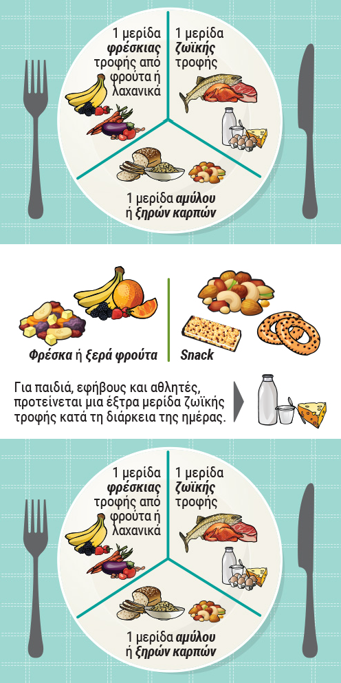
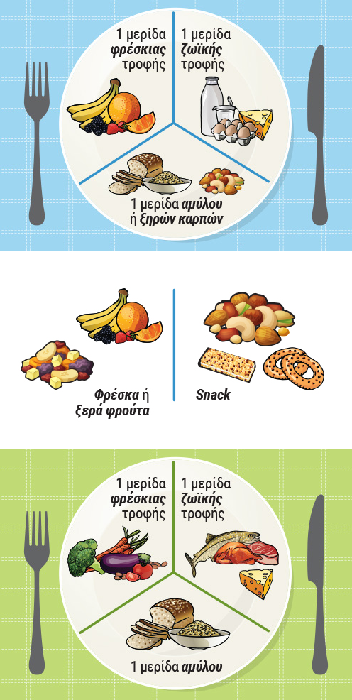

Αποθηκεύτηκε ✓
Φυσική Δραστηριότητα
Ύπνος & Κενώσεις
Ώρες ύπνου
ώρες
Κενώσεις
φορές
Νερό & Σημειώσεις
Νερό
ml
Πάτησε σε οποιοδήποτε κελί για να επεξεργαστείς εκείνη την ημέρα.
Πώς δουλεύει
Κάθε ημέρα έχει 5 γεύματα — σε κάθε γεύμα γράφεις ελεύθερα σε ένα πεδίο ό,τι έφαγες. Οι παρακάτω συνδυασμοί είναι ο οδηγός του πρωτότυπου εντύπου, για έμπνευση:
3άδα Πρωινό · Γεύμα · Βραδινό
- 1 μερίδα φρέσκιας τροφής (φρούτα ή λαχανικά)
- 1 μερίδα ζωικής τροφής
- 1 μερίδα αμύλου ή ξηρών καρπών
2άδα Προγεύμα · Απογευματινό
- Φρέσκα ή ξερά φρούτα
- Ένα snack (ξηροί καρποί, κράκερ, κουλούρι…)
Για παιδιά, εφήβους και αθλητές, προτείνεται μια έξτρα μερίδα ζωικής τροφής κατά τη διάρκεια της ημέρας.
Εφαρμόζετε πάντα τους σωστούς συνδυασμούς σε κάθε κουτάκι, ανάλογα με τις 3άδες ή τις 2άδες κάθε γεύματος.


Εξαγωγή σε Excel
Διάλεξε εύρος ημερομηνιών και κατέβασε αρχείο .xlsx που ανοίγει απευθείας στο Excel.
Αντίγραφο ασφαλείας
Με ενεργό συγχρονισμό τα δεδομένα αποθηκεύονται και online. Το αντίγραφο .json παραμένει χρήσιμο ως εφεδρεία.
☁️ Online συγχρονισμός
—
Διαγραφή όλων
Σβήνει οριστικά όλες τις καταγραφές από αυτόν τον browser.